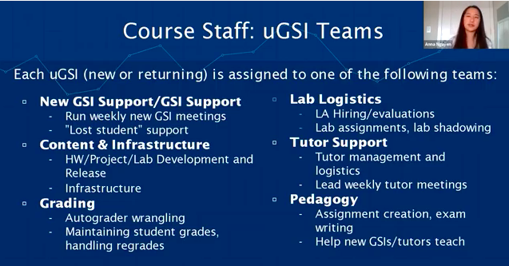

Undergraduate Student Instructors
Contents
Undergraduate Student Instructors#
=============================================
Overview#
Undergraduate Student Instructors (UGSIs) provide teaching services to support UC Berkeley’s rapidly growing data science program. Working alongside instructors, UGSIs are part of the scalable peer instruction model of the undergraduate curriculum. The UGSIs help facilitate collaborative team-based learning, near-peer instruction, and active learning. UGSIs are highly-motivated to learn and to share their knowledge. This model is a cost-effective resource that supports peer-learning, provides mentoring, and iteratively enables the co-creation of course materials alongside the professor.
Employing undergraduate students as instructors is a unique and successful aspect of the program, and has helped the expansion of the Data Science Undergraduate Studies over the past five years. On occasion, departments within the College of Letters & Science may have a shortage of applicants for Graduate Student Instructor (GSI) positions. If no qualified graduate student from the appointing department or other departments is available, a highly motivated and advanced undergraduate may work in the GSI position. In this program, UGSIs must have previous knowledge of the subject and complete domain-specific courses on teaching Data Science.
Target Audience#
The target audience for the UGSI positions are undergraduate students who have taken and excelled at the course for which they apply. This includes students interested in skill development, leadership, and education. In general, students are seldom able or allowed to become UGIs until their second year at Cal. They often stay multiple semesters and may choose to continue teaching a particular course with a specific instructor.
Students may become a UGSI for one of two main reasons, reflecting the two different types of employment available with the UGSI position.
Undergraduates in the 8-hour position are often in direct contact with students because their work responsibilities include teaching student discussion sections directly, holding communal office hours, answering questions on Piazza, and prepping for their classes.
Undergraduates in the 20-hour position may take on specialized leadership or logistical roles, including “Head TA” and “Head of Logistics.” These UGSIs are offered fee remission, and for this reason, attract more students who are from out of state and/or interested in staying for multiple semesters.
Both UGSIs and instructors hold office hours. Moreover, there are different types of study sessions such as “Homework Parties” and “Midterm Reviews” that are run nearly entirely by student staff. Student staff often prepare study aids for the students for these sessions, such as worksheets and review sheets of practice problems for students to work on. Additionally, there are “Tutors,” another category of undergraduate student course support who help out at office hours or study sessions and are not paid. Students who begin as Tutors and perform well for a semester or more have a better chance of obtaining the UGSI job. There are a similarly large number of Tutors as there are UGSIs.
Goals#
Undergraduate student instructors provide a more personalized and refreshing experience for the students in data science courses. UGSIs are able to relate and provide both professional and personal support to students, often in a different way than GSIs and professors. First, UGSIs have current knowledge of the course requirements and expectations and are fully familiar with the course from a dual perspective of both a student and teacher. Second, UGSIs can share the methods they have already developed and honed to work through the course material. Third, UGSIs remember their experience with the material for the first time and are able to guide other students through the course, easily identifying roadblocks to learning material as well as providing explanations helpful to a student encountering the course for the first time. Fourth, some students feel less intimidated and more comfortable asking for help from a peer instructor rather than from a GSI or professor.
Becoming a UGSI is a path available to students who wish to pursue a career in education or academia.
Key Pedagogical or Curricular Strategies#
The [course materials] from Introduction to Teaching Computer Science includes written reflection as a way that UGSIs can process and think about how to apply concepts to their teaching.

Links to Key Cyber Resources and their Implementation
Notable key instructional support resources include Piazza and Gradescope. For many assignments the autograder OkPy is used. OkPy requires an assignment to be completed on datahub, then the data hub submits to OkPy and can be viewed in submission format, and there is a script to take the submission on Ok Py and export it to Gradescope. Many courses in the data science department have an online textbook that is kept up to date, which is useful for linking chapters in slideshows. Data 100 has a separate data hub through which students can fetch and submit their assignments through datahub, which includes all the packages and dependencies so all students are working under the same environment.
Coursework involves both coding and written components. These usually entail creating a visualization and interpreting it. Subsequently OkPy autogrades the coding and Gradescope grades the written portion.
Links to Key Documents:
[https://github.com/sequoia-tree/teaching-cs]
[https://www2.eecs.berkeley.edu/Scheduling/CS/schedule-draft.html]
Other Key Inputs#
There are several levels within the model of undergraduate staffing, most of which are paid positions.
Academic Intern (AI)
Unpaid
Helping in labs each week
Often a stepping stone to becoming a TA or Tutor
Reader
Paid
Holding office hours with a UGSI present and grading
Tutor
Paid, at a higher rate than that of a Reader
Grading, holding office hours, and holding small group tutoring sessions
Undergraduate Student Instructor (UGSI/TA)
Paid, two options of either 8 or 20 hours/week (will change in the future)
Managing the students and work, split up into various teams with leads
All UGSIs must meet specific requirements to be considered and then undergo training before teaching and continue to meet (usually weekly) to discuss the course they are teaching.
As mentioned above, UGSI positions include:
8 hours/week (20%)
20 hours/week (50%)
All undergraduate candidates must:
Be registered in the semester in which they are teaching
Have upper-division (Junior/Senior status) when they begin teaching
Have previously taken the course for which they are being appointed, its equivalent, or a more advanced course, with a grade of A- or better
Candidates for data science courses (which are cross-listed as stats courses) must also:
Be enrolled in no fewer than 12 units of course work
Have an overall GPA of 3.1 or higher
The narrative regarding links between Component Goals, Pedagogical Strategies, and Central Elements of the Program
The construction of the course is a combination of the professor aided by the UGSIs. There is a pedagogy team for some of the larger courses.
Best Practices for Variation Across Institutions#
The most important aspects of the program are the branched hierarchy of student staff that carries out delegation through a chain of command and the incremental improvements the course material receives over the years.
Critical TA Professional Development and Training
Within the Data Science program, there are several steps required for training. To become a UGSI, students must take CS 370: Introduction to Teaching Computer Science. This course covers methods for teaching, including leading one-on-one practice tutoring. UGSIs often have weekly meetings throughout the semester to go over material and announcements.
Implementation for Specific Courses#
Below are several popular courses that each have their own structure of staffing depending on the age/iterations of the course, size of the class, and professor’s wishes. Course use and growth as a function of student-instructor support has linearly expanded to include thousands of students, in certain typically lower-division courses.
Below are several popular courses that each have their own structure of staffing depending on the age/iterations of the course, size of the class, and professor’s wishes. Course use and growth as a function of student-instructor support has linearly expanded to include thousands of students, in certain typically lower-division courses.
As the data science department has expanded, the employed student base has expanded as well. Classes may hire a few students per semester or may have an entire hierarchical structure with set roles and titles.
Other Implementation Notes#
Info to use as writing up : [https://grad.berkeley.edu/appointments-handbook/]
Undergraduate GSIs
Generally, undergraduate students may not be appointed as GSRs or GSIs, but they can be appointed as Readers or Tutors and are not eligible for the fee remission program (please refer to Article 11 of the UC-UAW contract). However, if a department is unable to recruit any qualified graduate students or hire a lecturer to fill an essential GSI position, the department may submit a written request of exception to the Graduate Division. In such cases exceptions are allowed for undergraduate GSI appointees but under NO circumstances can undergraduate students be appointed as GSRs.
The Dean of the Graduate Division has delegated authority to the deans of the College of Letters and Science and the College of Engineering to approve undergraduate GSIs.
If the department or hiring unit is not in College of Letters & Science or College of Engineering, please complete the Request to Appoint Undergraduates as GSIs Form (XLS) and provide an explanation of why undergraduates must be hired to gradappt@berkeley.edu.
Requirements for Undergraduate GSIs:
Registered in the semester in which they are teaching and remain registered through the end of the semester.
Enrolled in no fewer than 15 units of course work.
Summer Sessions UGSIs must be continuing students. (A continuing student during the summer was enrolled in the Spring semester and is enrolled for the Fall semester).
If the Summer Sessions UGSI is graduating with his/her terminal degree in August, they may use UGSI during that summer prior to their Summer graduation. (Please refer to the Office of the Registrar’s section on Diplomas and Graduation).
Upper Division status when undergraduate begins teaching.
Overall GPA of 3.0 or higher.
Previously taken the course for which an undergraduate is being appointed, its equivalent or a more advanced course, with a grade of A-or better. (If it is a course equivalent or more advanced course, please point that out on the form when submitting the request.)
Adhere to the same criteria of eligibility required for graduate student GSIs. If the undergraduate appointee does not speak English as a native language, they must pass the English Proficiency requirement before they can teach (please refer to the GSI Teaching & Resource Center for more information). Departments/hiring units are responsible for making sure the student has passed the English Proficiency requirements prior to requesting approval for the UGSI appointment. Please contact langpro@berkeley.edu with questions about a student’s English language proficiency eligibility.
If serving as a first-time GSI, departments/hiring units are responsible for ensuring that the UGSI fulfills the following requirements:
Attend the New ASE Orientation.
Attend the Teaching Conference for first-time GSIs.
Complete the online Professional Standards and Ethics Course. Please note, per the May 2, 2016 revised Graduate Council’s memo on Appointments and Mentoring of Graduate Student Instructors [move from dashboard to web], every first-time GSI must successfully complete the online course Professional Standards and Ethics for GSIs before they interact with students (in person or online) in their role as an instructor.
Complete the 300-level semester-long pedagogical seminar on teaching.
Undergraduate GSI appointees are eligible for fee remission per the UC UAW contract. Undergraduate GSI fee remissions are not processed by Graduate Division; departments are responsible for remissions associated with Undergraduate GSI Appointments. Please refer to EVCP Breslauer’s memo dated March 10, 2008 for information.
Additional Guidance for Implementation
It must be noted that the current UGSI staffing model may undergo changes starting 2021 because of a multi-million dollar lawsuit settled in January 2020 between the student workers union and the institution regarding scheduling hours and tuition remission.
Recommendations
The program may benefit from including universal design or other access features. This may include key diversity and inclusion practices and strategies.
Sources
2 [https://statistics.berkeley.edu/employment/gsi-and-reader] 3 [https://ls.berkeley.edu/faculty-and-staff-resources/faculty-personnel-and-budgetary-information/gsi-postdoctoral-0] 4 [https://www.nbcnews.com/news/us-news/uc-berkeley-student-workers-awarded-millions-back-pay-n1117466] 5 CS 20-21 Courses [https://www2.eecs.berkeley.edu/Scheduling/CS/schedule-draft.html]